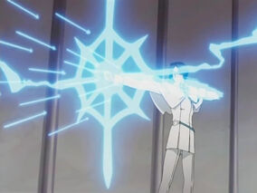

Quincy
Quincy are a spiritually aware Humans who possess the ability to manipulate Reishi to accomplish a
multitude of feats. As such, their powers are considered unnatural by other beings, namely the Shinigami, who
believe that their power to destroy an hollow soul upsets the balance of the world. It is for this reason that Shinigami and
Quincy are often compatred to oil and water in that the two are polar opposites, this has lead to a multitude of conflicts over
the centuries with the Shinigami
